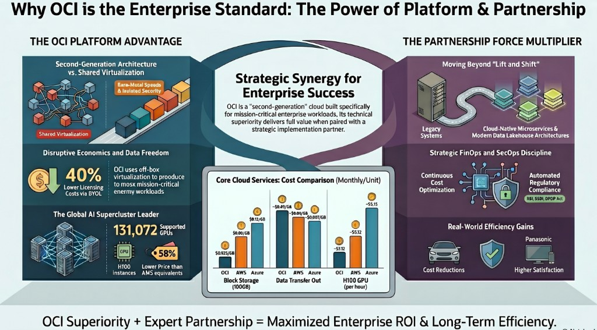

“We know we need to move to cloud. But which cloud — and does the partner we choose really matter?”
After nearly three decades in enterprise IT spanning IBM, Oracle, and Novell — yes to both. And the stakes have never been higher.
Full reference document (PDF)
Open / download PDF →The Cloud Was Not Built Equal
First-Generation Cloud
Built fast, built cheaply — not designed for real enterprise demands. Shared infrastructure, shared risk.
OCI: Second-Generation Cloud
Engineered from the ground up for the workloads that actually run enterprise businesses — with the advantage of learning from what the first generation got wrong.
Six Reasons Enterprises Choose OCI
Enterprise Workloads Without Surgery
Off-box virtualisation. Non-blocking networks. Native Oracle RAC. Moving your Oracle ERP to AWS is like fitting a truck engine into a car chassis. OCI is the garage built for it.
Your Oracle Licences Work Harder
BYOL on OCI = 20–40% licence cost savings. Oracle RAC native — not available on AWS at any price.
Pricing Economics That Are Genuinely Disruptive
| Metric | OCI | AWS | Azure |
|---|---|---|---|
| Standard VM (4 vCPU / 16GB) | ~$38/mo | ~$70/mo | ~$70/mo |
| Block Storage (100GB) | $0.025/GB | $0.08/GB | $0.12/GB |
| Data Transfer Out | 10 TB FREE | $0.09/GB after 100GB | $0.087/GB after 100GB |
| H100 GPU (per hr) | ~$5.12 | ~$12.29 | ~$11.93 |
| A100 GPU 4× + 15TB egress | $8,838/mo | $13,570/mo | $12,367/mo |
OCI pricing is globally consistent — including India regions Mumbai & Hyderabad. AWS and Azure India regions are frequently priced higher than US East.
Security Is Architecture, Not an Add-On
Zero-trust model. Built-in encryption. DDoS in the network fabric. Dedicated Region — full OCI inside your own data centre.
The AI Infrastructure Leader — by a Wide Margin
True Multi-Cloud & Regulatory Flexibility
Only hyperscaler with certified low-latency DB connections to AWS, Azure, AND Google Cloud simultaneously. India regulatory compliance native: RBI, SEBI, IRDAI, DPDP Act.
Real Enterprises. Real Results.
| Customer | Workload | Key Outcome | OCI Capability |
|---|---|---|---|
| Mazda | Inventory Mgmt ERP | 50% cost reduction, zero app changes | Off-box virtualisation + L2 Networking |
| Tata Motors | Dealer Mgmt System — 60,000 users | Multi-fold uplift in data reporting | OCI + ExaCS |
| Berger Paints | Mission-critical DB migration | 25% ops efficiency, 2× faster reports | OCI + ExaCS |
| Panasonic Electric | Core ERP & Finance | 50% DB reduction, +75% customer satisfaction | OCI + ExaCS |
| IFFCO | Oracle EBS + Custom CRM + 100s of apps | 2–7× performance improvement | OCI + ExaCS + Digital Assistant |
| Tally Solutions | Tally Prime SaaS | 60% cost reduction vs AWS | OCI Compute + OKE + NoSQL |
The Acceleron Generation — OCI Is Raising the Bar
Oracle Acceleron is a purpose-built SmartNIC that handles networking independently — freeing your CPU for actual workloads. The result: higher throughput, lower latency, built-in encryption, zero-downtime patching. At no additional cost.
| Shape | Processor | Key Uplift | Best For |
|---|---|---|---|
| E6 DenseIO Acceleron | AMD EPYC Turin 5th Gen | +17% IPC vs E5 | Large DBs, Data Warehousing |
| E6 Standard Acceleron | AMD EPYC Turin 5th Gen | +16% per-core CPU | General-Purpose ERP, CMS |
| X12 Standard Acceleron | Intel Xeon 6 (6900 series) | 1.5× performance vs X9 | SAP, Oracle ERP, High-Performance Web |
| A4 Standard Acceleron | AmpereOne M (Arm) | Best-in-class AI inference | AI Inference, Cloud-Native, Microservices |

The Dangerous Myth of “Just Deploy It”
OCI can be the best cloud in the world for your workloads — and still fail to deliver value if deployed incorrectly, managed poorly, or used without a coherent strategy.
Expert Support — When It Counts Most
Certified OCI architects. 24/7 managed support. Proven incident response playbooks. The difference is not what they do when things go right — it's what they do when things go wrong.
Best Practices — The Compounding Advantage
Right-sizing discipline. Automated governance frameworks. Pre-built accelerators. Getting architecture right at the start compounds over time — right decisions multiply, wrong ones create debt.
Innovation — Beyond Lift and Shift
App modernisation into cloud-native microservices. Modern lakehouse architecture. Oracle Autonomous Database — self-managing, self-securing, self-repairing.
AI — Agentic and Generative Intelligence at Scale
Gen AI (Llama 3, Cohere) for content generation and automation. Agentic AI for multi-step autonomous workflows. RAG architecture makes AI answer from your proprietary data. Responsible AI governance for regulated industries.
FinOps — Turning Cloud Spend into a Strategic Asset
Real-time cost visibility. Anomaly detection. Oracle Universal Credits optimisation. Chargeback models.
“The goal of FinOps is not to spend less. It is to spend wisely — ensuring every dollar is traceable to a business outcome.”
SecOps — Security as a Continuous Practice
OCI Cloud Guard continuous posture management. Least-privilege IAM enforced programmatically. Compliance automation for RBI, SEBI, IRDAI, DPDP Act — generating audit-ready evidence automatically.
Choose the platform engineered for your workloads.
Choose the partner built to make that engineering deliver.